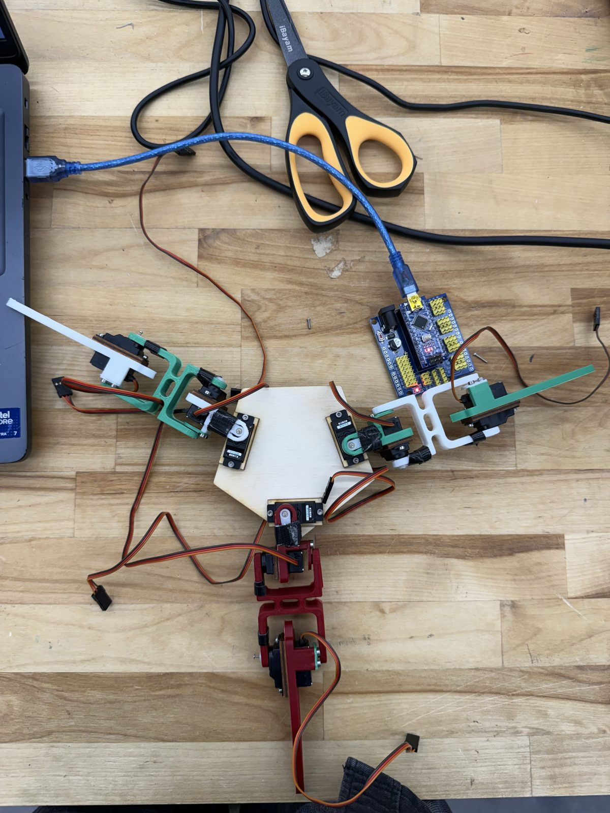
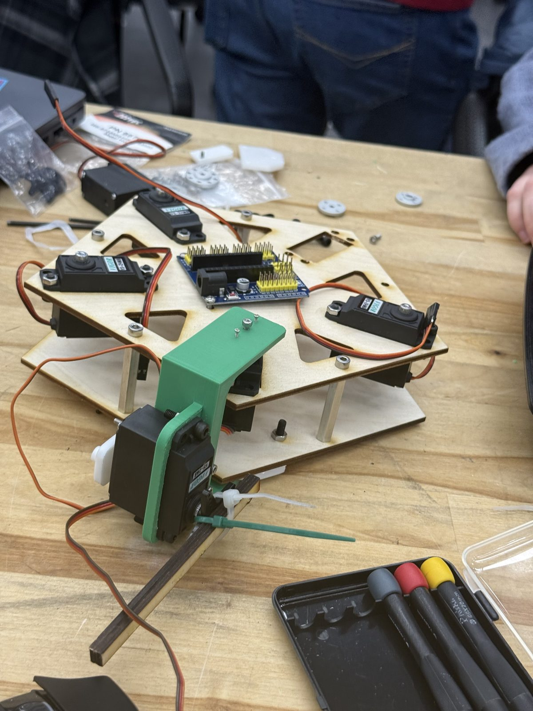
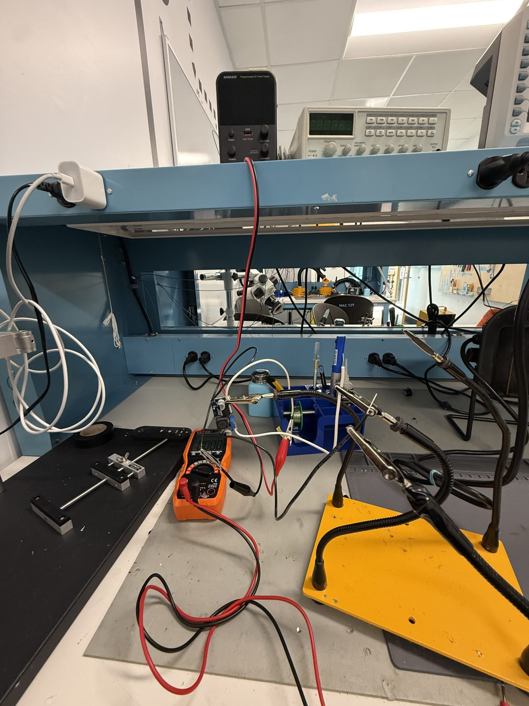

Problem: A walking robot needs 12 servos strong enough to lift its body, and a power setup that can feed them without stalling.
Role: Team project. I wired and labeled the servo driver, tested the power setup, measured the leg geometry, and ran a test crawl gait on the robot.
Result: Pebble #2 walks with a hard-coded test crawl gait, drawing 2.05 A at 6 V (12.3 W). We found the 3 A buck converter and Nano shield couldn't supply the stall current (about 9.6 A) and switched to a PWM Adafruit servo driver.
Our team is building an animatronic of Rocky from Project Hail Mary. The plan is 4 legs that walk and a fifth leg that works as an arm. Right now we're on the walking MVP. I wired and labeled the servo driver, measured the leg geometry, and ran a test gait to check the hardware before writing the final walking code.
The first version had three legs, smaller Vigor servos, and an Arduino Nano on an IO shield. The servos were too weak and it had a hard time lifting itself up.

Pebble laid flat out.
Pebble moving up and down.
Before building the next version, we checked whether one Vigor VS-2HMB servo could lift the whole body at 6 V. It could, so we switched to those.

One VS-2HMB servo getting ready to be tested.
Pebble #2 has 4 legs with 3 VS-2HMB servos each, so 12 servos total. I labeled every servo by leg and joint so we can tell them apart when something goes wrong.

Pebble #2 with all 12 servos labeled.
Twelve of these servos pull about 3 A normally, and around 9.6 A if they all stall at once.
We tried using a buck converter to bring a 12 V AC adapter down to 6 V, and I tested it with a multimeter and a bench power supply. It didn't work. The converter we picked only handles 3 A, which isn't enough for these servos. The Nano IO shield couldn't handle the current either, so we switched to a PWM servo driver.

Testing the buck converter.
Pebble #2 walks. This is a test gait, not the final one. I measured the leg geometry and ran a hard-coded crawl gait from template code (C++, Adafruit PWM library) to check the hardware before writing the real gait. A crawl gait lifts one leg at a time and keeps three feet down, so the robot stays stable while I look at power and heat. While walking, it draws 2.05 A at 6 V (12.3 W) from a bench supply.
Pebble #2 walking with the test crawl gait.